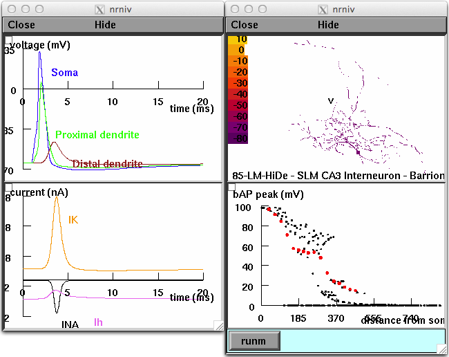

This is model code for running simulations in Parekh R, Ascoli GA (2013) Neuronal morphology goes digital: a research hub for cellular and system neuroscience. Neuron 77:1017-38 This model code was supplied by Michele Ferrante. An illustration of a NEURON model and why reconstructing morphologies is useful in this regard (i.e. investigating spatial/temporal aspect of how different currents and voltage propagate in dendrites). Usage: Autolaunch from ModelDB or download and compile the mod files and start Fig4C.hoc with the method appropriate to your platform (double click the file in mswin, type "nrngui Fig4C.hoc" in unix/linux ,or drag and drop the Fig4C.hoc file onto the mknrndll icon in Mac OS X). After the simulation starts, if you press the runm button the simulation should reproduce Fig 4C.: 